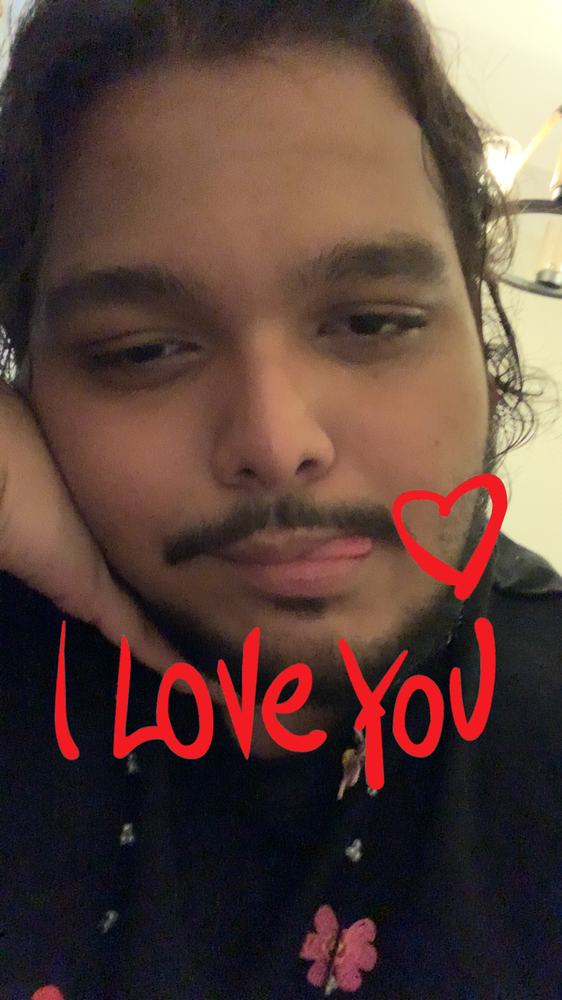
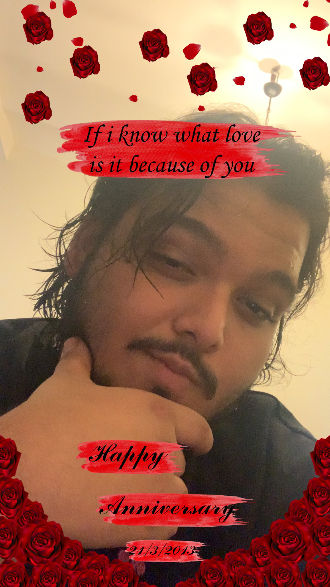
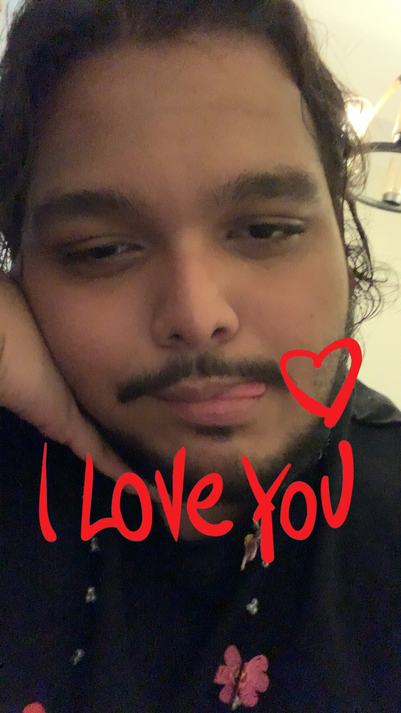
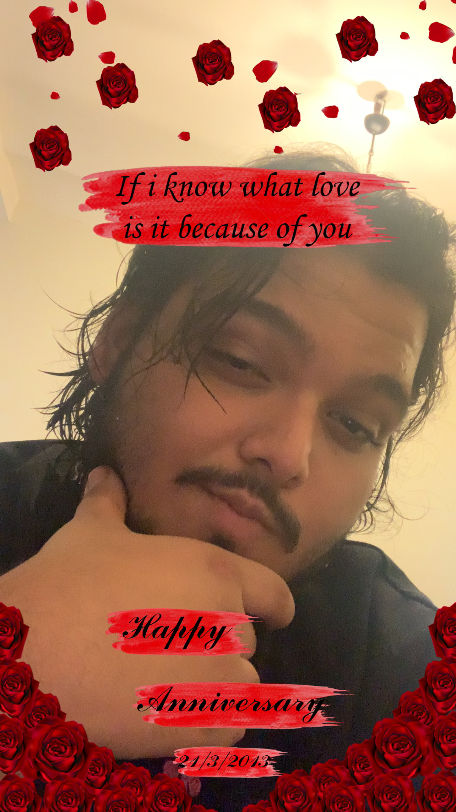
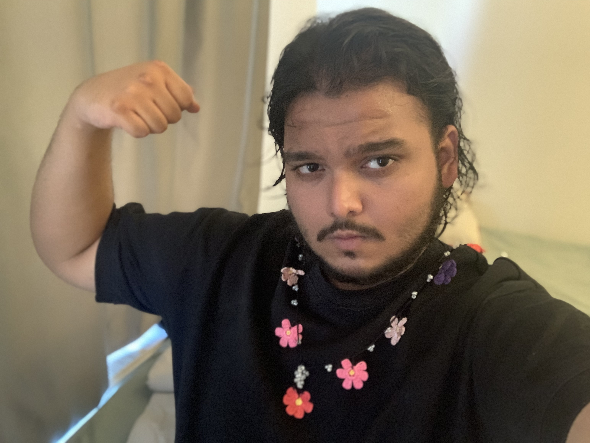
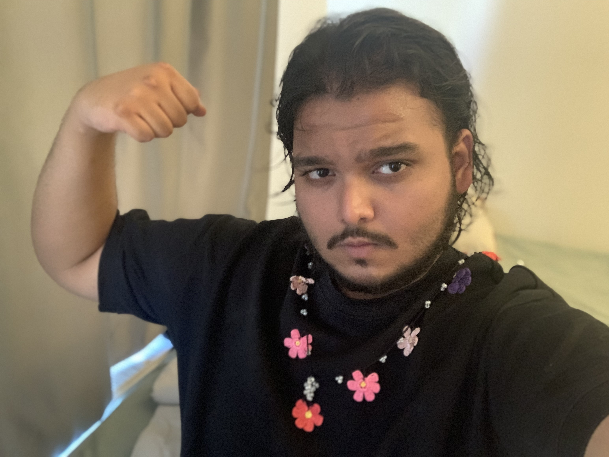

My beloved wife.
The past two years have fluttered by, like the wings of a butterfly.
Two years ago, on a random Sunday you texted me. Did you know then, that this text would shape our lives so beautifully in the next two years? Well I did. I read your text, then read it again. I read it about five times before I realized this was actually happening. And I just knew.
At that moment, nothing else existed. It was just me and you. And something inside my heart told me that you were the one. Never in that moment, or the next or any other moment did I second guess or doubt that. It was you the moment we met.
Words hang in still air—
heartbeats louder than the world.
Your eyes break the storm.
It was as if all my life my soul had been waiting to find its reflection in another soul and the moment you walked into my life, it just knew. We were never just friends or lovers. I believe— with every thread of my soul— We were fatebound.
I was born with your name etched onto my heart, as you were, with mine. Maybe if we listen closely, our hearts even beat the same rhythm.
In your eyes, I knew—
not love, but recognition.
Fate had called me home.
Ever since that moment, every single day has brought more smiles to my face than I probably ever smiled in my life and my small little heart has known butterflies and my weak lungs have known what it feels to breathe and my mind no longer held me prisoner to my own thoughts.
Because now I had you. You were here to protect me. And your presence pushed away all the suffering and took away the pain and made me see that life was worth living after all. Made me realize that above all else, YOU were worth living for.
Your smile, ever so bright,
pulled the night out of my bones—
you became my light.
Each day was a new story, but the one thing constant was my growing love for you. It grew and grew and grew. There was no stopping it. If it were anything else, I’d say it grew so much it consumed me. But this is my love for you. It was the best thing that could ever happen to me. It gave me life. Our love made me strong. It made me who I am.
I look back to two years ago and I realize how much I changed. How much you’ve changed me. All for the better. I do things differently now, I’m a lot more responsible now. I’m a lot more careful about myself knowing that I have to take care of me not just for myself, but also for you. Because I was your boy now. Your baby.
Your voice, calm and sure,
stitched the cracks inside my chest—
I breathed whole again.
In the past two years we’ve been through so much together, it doesn’t feel like i’ve only known you two years. It feels like I’ve known you my whole life, and somehow, I knew you even before then. It feels so unreal, that I’ve got you with me no matter what, like my guardian angel, always with me, always here for me. I’ve always got you.
And you’ve got me. No matter what, no matter when. Though a little far, I’m here for you always. Whenever you need me, you’ll find me here. Waiting for you, caring for you and loving you. You are mine to love, and I will love you like I was made to love you. There’s no buts, no ifs. No conditions. I loved you, I love you and I will always love you.
I lived for your light—
not because life made me stay,
but because you did.
I know I used to write you a message every month on the 9th. I know I didn’t this year, and it's not that I forgot. I always remembered. But sometimes we wouldn’t talk so I couldn’t. But I always remembered. Every 9th of every month I would help someone poor. Sometimes it was just whatever money I could, other times it was food. Maybe a small act and a random stranger's prayers would help shape our future better. Doesn’t sound like much, but I did it all in your name.
It felt right. It felt more important than just words and messages. To pray to Allah to keep you safe. To make you mine. To make you happy. To see you smiling always. I prayed for us to be happy, I prayed for me to be good enough for you. I prayed for you to always be mine. And I’m sure he’ll listen.
I was made for this—
not the world, but just your mouth,
where my name felt right.
Here it is. 9th of July once more. The bare land I walked on before a certain 9th of July in the past is now a garden filled with roses and you’re the gardener that waters my heart and the roses that bloom in my soul and the garden I feel at home in. You are my Queen. My Queen of roses.
Hold my hand love, we made it through two years. We’ll make it through anything else. You and me? We’re a forever kind of thing. Whatever may this life throw at us, with each other we will face it brave. Because nothing stands in our way. Nothing will hold me back from loving you. Because I love you. And I always will.
That is my promise.
_______________________________________________
(Find attached some very random collection of images)
(The flower necklace thing I got for this day specifically because I wanted to. It’s our anniversary, I wanted to get a little something special)
These images will be available to be saved later in chat if you can ask Mr. Huzaifah Ahmad who is our customer support representative. His instagram handle is @huznotonroids.
 
